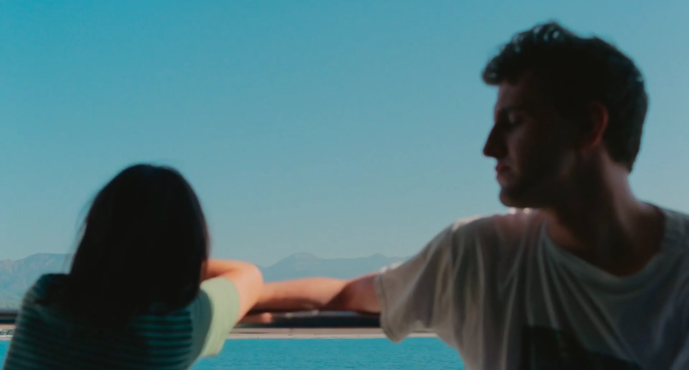

-

screenshot-2023-04-15-at-23.20.56.png
Small details, unnoticed characteristics of objects around me, were enhanced, jumping at me to the eye, to the touch. Texture, palpable fuzzy memories of us, invade reality. I stare at the horizon; music notes have feelings. Happenings form a narrative, a trail behind me. The moment is as important as the meaning it brings. Behind a glass, alone, frozen in time, just meant to be watched.
screenshot-2023-04-15-at-23.20.56.png